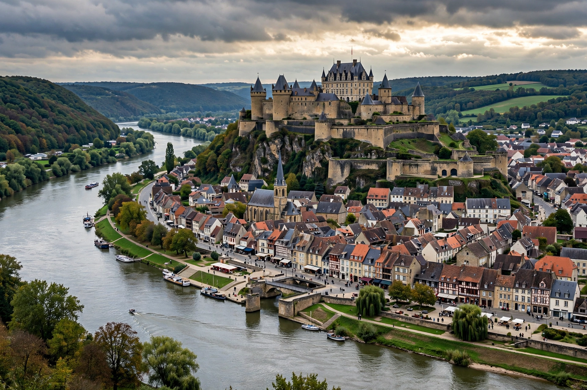

Sedan, Ardennes

| Sedan | |
| Country | France |
|---|---|
| Region | Grand Est |
| Department | Ardennes |
| River | Meuse |
| Known for | Château de Sedan; Battles of Sedan (1870 and 1940) |
Sedan is a commune in the Ardennes department in the Grand Est region of northeastern France, on the river Meuse close to the Belgian border. The town's history is dominated by its enormous fortress, the Château de Sedan, and by two catastrophic French defeats that occurred in its vicinity — in 1870 and in 1940.
- History
- Battle of Sedan, 1870
- Breakthrough of 1940
History
Sedan grew around a castle first built in 1424 by the lords of La Marck; over the following centuries it was enlarged into one of the largest medieval fortresses in Europe, covering some 35,000 m² across seven levels. The principality of Sedan was an independent Protestant enclave in the sixteenth and early seventeenth centuries, famed for its academy and its textile industry, before Louis XIV annexed it to France in 1642. The town was the birthplace of the great marshal Turenne (1611). Sedan's drapery and lace industries declined in the modern era, though the town's name was given to the sedan chair and, later, to the sedan motor car body style.
Battle of Sedan, 1870
On 1 September 1870, during the Franco-Prussian War, the French Army of Châlons was encircled and crushed at Sedan by the Prussian armies. Emperor Napoleon III, present with the army, surrendered with some 100,000 men — a humiliation that destroyed the Second Empire and led within days to the proclamation of the Third Republic in Paris. The battle, in which Prussian artillery firing from the heights around the town proved decisive, was celebrated in Germany as Sedantag.
Breakthrough of 1940
In May 1940 the main German Schwerpunkt of the invasion of France fell at Sedan. Panzer groups under Guderian and others, having crossed the Ardennes, forced the Meuse at Sedan on 13 May against second-rate French reserve divisions, whose front collapsed under massed air attack. The breakthrough unhinged the Allied plan and led within weeks to the fall of France and the armistice of 22 June 1940.
See also: Ardennes; Armistice of 22 June 1940; Blitzkrieg; Franco-Prussian War.